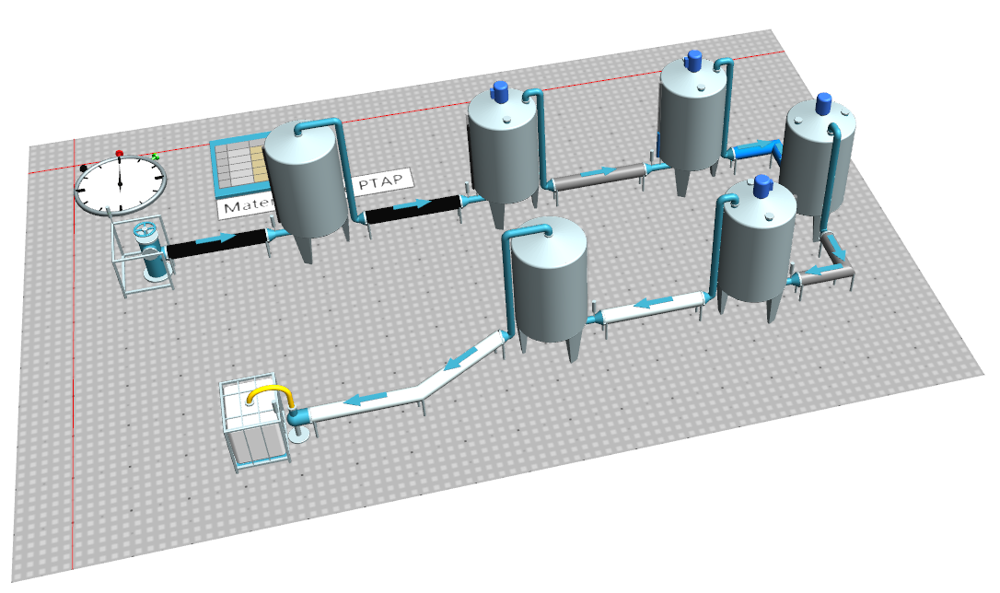
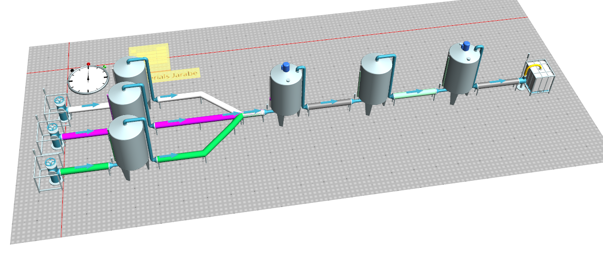
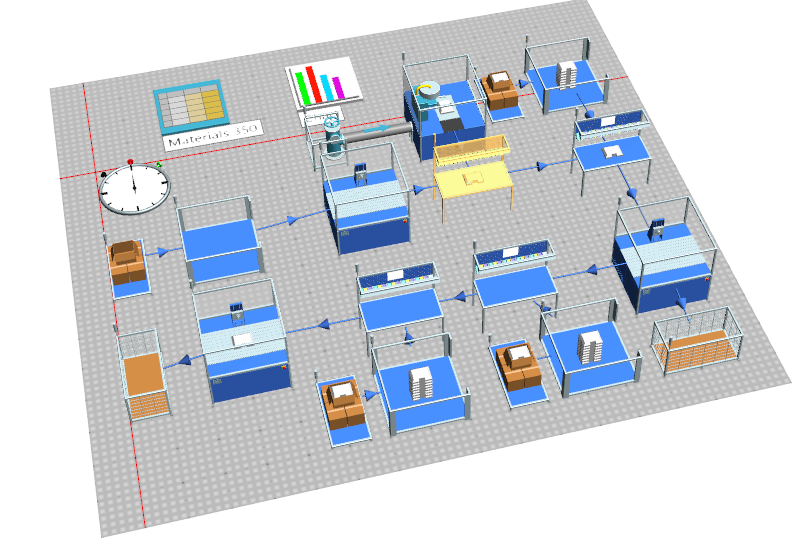
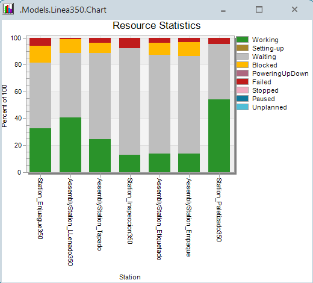

Se desarrolló un modelo de simulación discreta en Siemens Tecnomatix Plant Simulation para representar una planta de bebidas compuesta por tres etapas principales: tratamiento de aguas, preparación de jarabes y líneas de envasado. El objetivo del modelo es analizar el comportamiento del sistema, identificar cuellos de botella y evaluar el impacto de fallas operativas modeladas mediante supuestos de MTTR.
| Elemento | Descripción |
|---|---|
| Software | Siemens Tecnomatix Plant Simulation XX |
| Contenido del modelo | Modelo principal, imágenes del layout y resultados estadísticos |
| Productos simulados | 3 productos |
| Supuesto de fallas | Fallas modeladas con MTTR en las estaciones críticas |
Esta etapa representa el proceso de acondicionamiento del agua antes de su ingreso a la preparación del producto. En el modelo se incluyen las operaciones de tratamiento y flujo entre estaciones para garantizar la disponibilidad de agua de proceso para las etapas posteriores.

En esta sección se modela la preparación de los jarabes necesarios para los distintos productos. La simulación representa el flujo de mezcla, almacenamiento intermedio y suministro hacia la línea de envasado, permitiendo evaluar la capacidad de respuesta de esta etapa frente a la demanda de producción.

La línea de envasado representa el proceso final de producción, incluyendo el manejo de envases, llenado, tapado, inspección y salida del producto terminado. En esta etapa se analizaron variables de desempeño como utilización, flujo de salida y comportamiento frente a interrupciones por fallas.

A partir de la simulación se obtuvieron indicadores de comportamiento del sistema que permiten comparar desempeño entre etapas, identificar restricciones operativas y sustentar decisiones de mejora.
